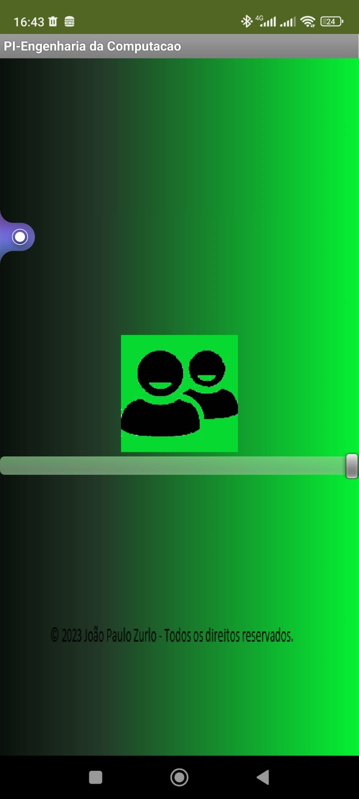
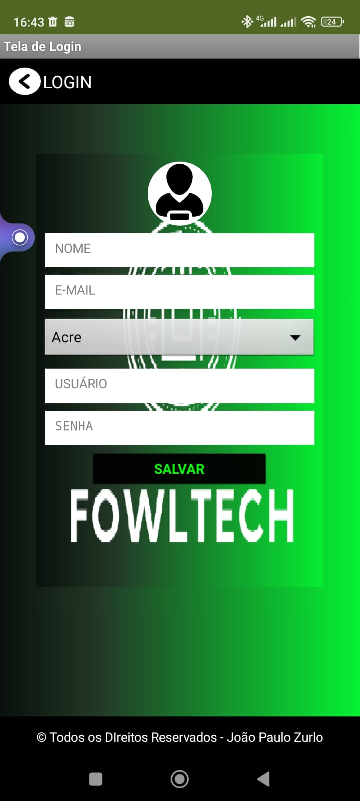
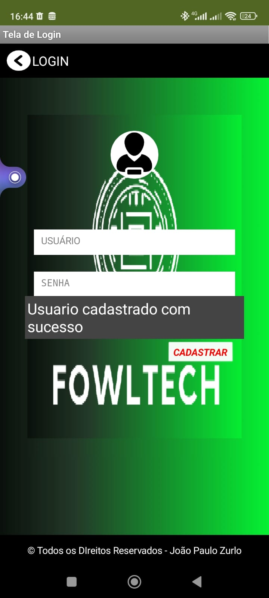
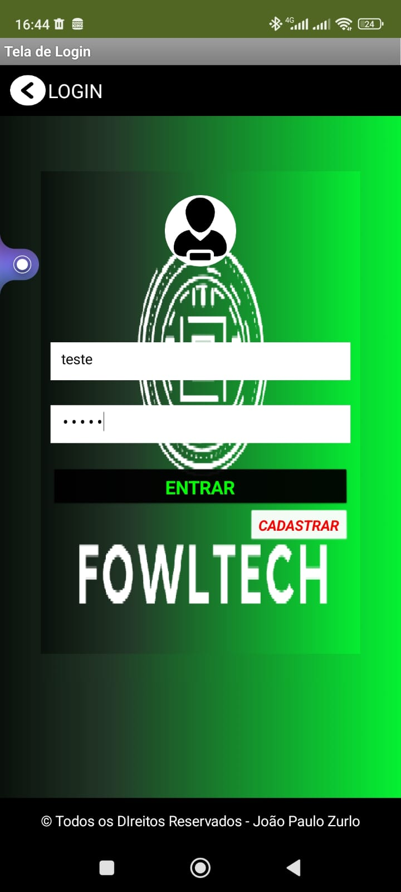
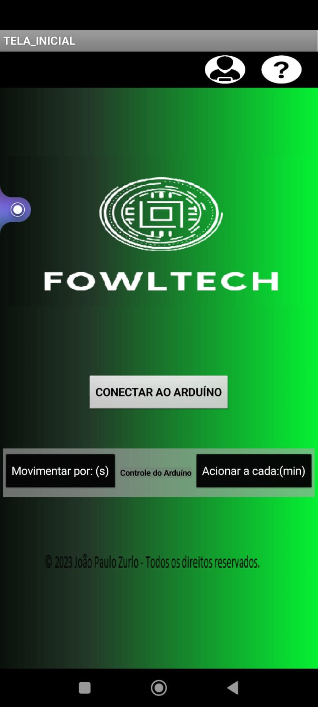
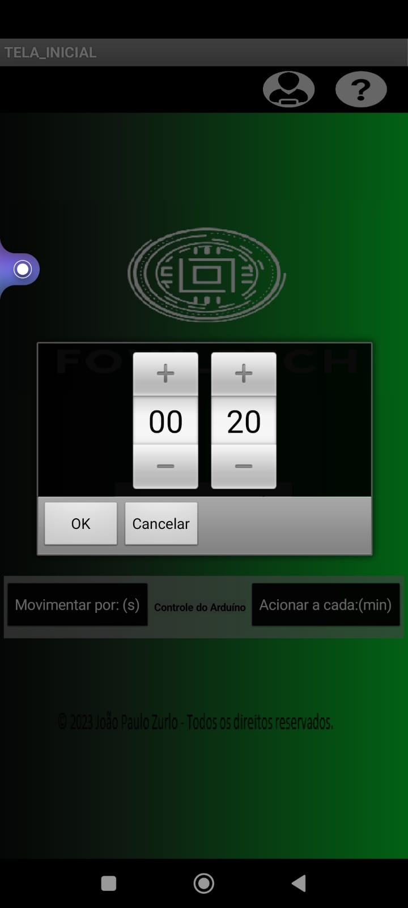
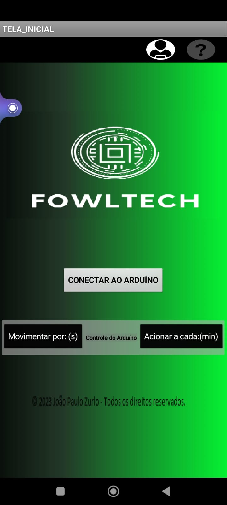
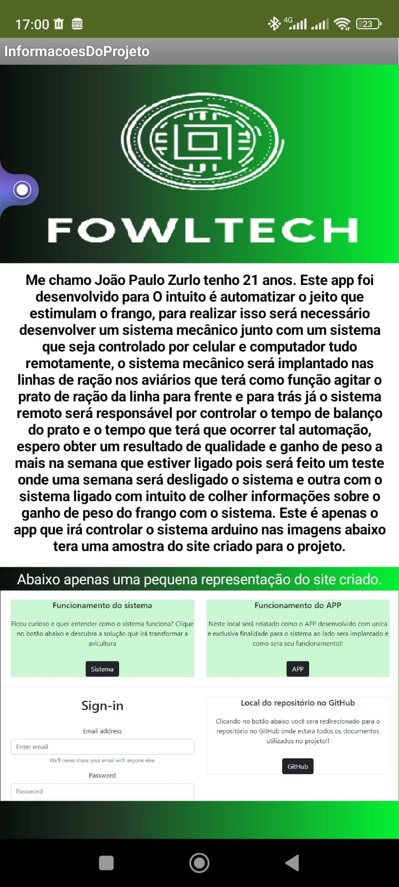

No video abaixo será possivel observar o funcionamento do app:
Ao iniciar o app vemos o carregamento e logo após carregar o cliente é levado para a tela de login, porem se não houver cadastro devera clicar no botão cadastrar. Na aba cadastro tterá que colocar os dados principais(nome, email, senha usuario e estado) clicando em slavar o usuario podera acessar a tela inicial da automção. Na aba após o login teremos 3 botões conectar ao arduino via bluetooth onde sera redirecionado para outra tela e lá podera ver ser arduino, outros dois botoes portanto sao responsavel por ativar a automação, no botão Movimentar por:(s) será possivelç controlar o tempo que a autmação ira movimentar o prato de ração (tempo em s o indicado), no terceiro botão temos a opção de controlar de quantos em quantos minutos sera ligado novamente.

Imagem 1: ↑ Tela de carregamento do app.

Imagem 2: ↑ Tela de cadastro

Imagem 3: ↑ Tela de login

Imagem 4: ↑ colocando os dados cadastrados para entrar na aplicação

Imagem 5: Tela da automação ↑ com os botoes de conectar aoarduino que direciona para o bluetooth e os botões de controle do arduino são representados pelos botões Movimento por:(s) e Acionara cada(min).

Imagem 6: ao clicar no botão movimentar ↑ o cliente podera controlar o tempo que deseja movimentar o prato a cada vez que ligar.
Imagem 7: ao clicar no botão ↑ Acionar a cada(min) será possivel alterar os intervalos de tempo que o sistema irrá ligar.

Imagem 8: Pode observar que ↑ o botão de interrogação esta meio apagado pois ao apertar é redirecionado para uma nova aba cuja função é explicada na proxima imagem.

Imagem 9: ↑ Nesta ultima imagem temos um pequeno texto explicando por que da criação desse projeto.